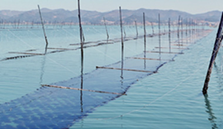

일 년에 딱 한 번 생산되는 프리미엄의 원초, 곱창돌김입니다.
김 양식시설은 기능과 형태에 따라 지주식(支柱式)과 부류식(浮流式)으로 구분됩니다.
| 지주식 (支柱式) 양식 |
지주식은 육지에 근접한 내만 어장에 설치하며, 김발의 높이가 말목에 고정되어 있으므로 썰물일 때는 햇볕에 자동적으로 노출되고 밀물일 때는 물속에서 김이 성장하게 됩니다.

지주식(물에 잠겼을 때) 지주식(수면 위에 노출 됐을 때) |
|
|---|---|---|
|
||
| 부류식 (浮流式) 양식 |
노출 부류식 양식 |
노출 부류식은 일명 ‘뜬 홀림발’이라고 하며 김발 가장자리에 부자를 장착하여 인위적인 힘으로 김발을 뒤집어 수면에서 떠 있도록 양식하는 방식으로 자연광이 좋은 날 어민들이 직접 양식장을 돌며 김발을 뒤집습니다. 어장의 분포는 내만이 아닌 외해어장에서도 김양식이 가능하도록 1980년대에 새로 개량된 양식 방법입니다. 이 방식은 대량 생산의 장점이 있지만 그만큼 병충해에 약하며 사람이 직접 노출을 하는 만큼 품질의 편차가 큽니다. 부류식(물에 잠겼을 때) 부류식(수면 위에 노출 됐을 때) |
| 무노출 부류식 양식 |
무노출 부류식은 24시간 내내 바닷물 속에 잠겨서 자라는 방식으로 지주식처럼 햇볕에 노출이 불가해 영양상태가 부실하여 맛이 떨어집니다. 자연광에의햔 살균 처리 기능이 현저히 떨어져 병충해에 취약합니다.(김 양식 과정에서 잡태 등 이물질을 제거하려고 유해화학물질인 무기산(공업용 염산)을 김 양식에 불법 사용하여 문제가 되고 있습니다.) 부류식(물에 잠겼을 때) |
|